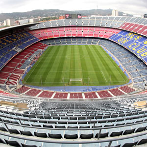

Home History Buildings Restaurants The Beach
| La Sagrada Familia |
| Park Guell |
| Casa Mila |
| Torre Agbar |
| Casa Estape |
| Casa Batllo |
| Camp Nou Stadium of F.C Barcelona |
| Palau de la Musica |
Camp Nou, Stadium of F.C.Barcelona
The largest football stadium in Europe

The football club FC Barcelona is hostet in the Camp Nou stadium. After the dismantling of the Central Stadium in Leipzig, the Camp Nou is the largest football stadium in Europe.
In September 1957 the Camp Nou was inaugurated after three years of construction. During the World Cup 1982, the stadium was enhanced to the highest rank.
Originally the stadium of FC Barcelona had after this expansion of approximately 120,000 seats. Because of requirements of UEFA, the space was reduced at around 98,000 seats.
The Camp Nou stadium is 48 meters high, 250 meters long and 220 meters wide. In total, the stadium includes an area of 55,000 m2. All seats can be evacuated within 5 minutes.
It should be further developed so that it is used for 115,000 spectators and thus has almost the original capacity.
On 17 November 1982 visit of Pope John Paul II to the Camp Nou and preached before 120,000 faithful. Since them, he has been a member of FC Barcelona.
A football fan will certainly also be interested in the Museum of FC Barcelona. A highlight of the tour of the museum is a look at the stadium of the gallery.